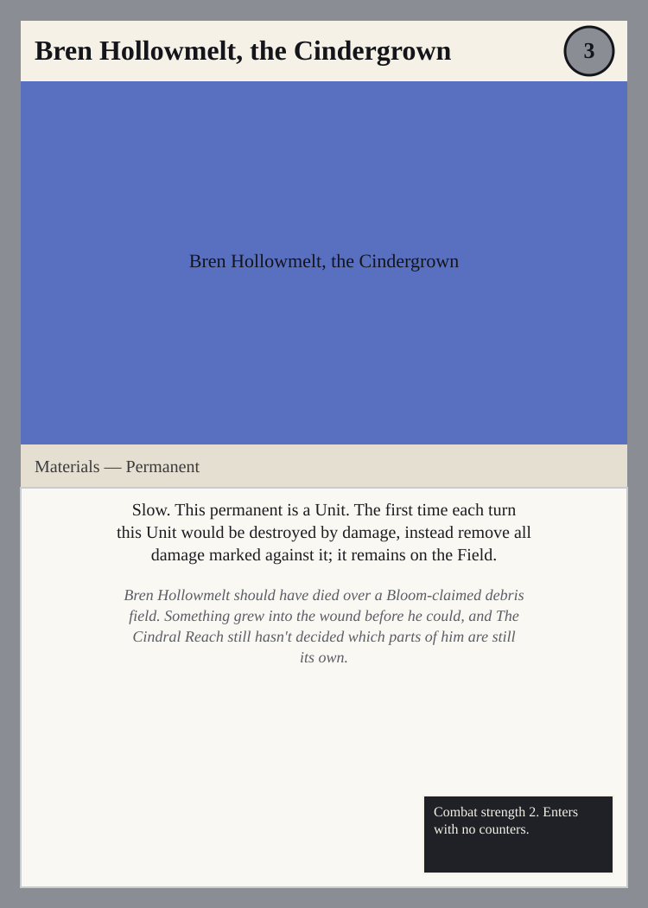
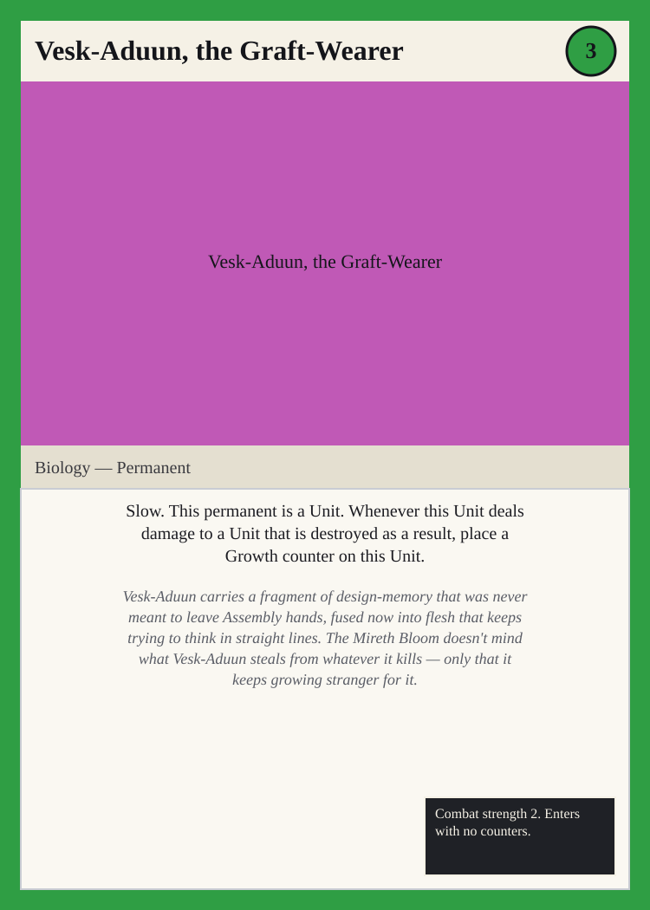
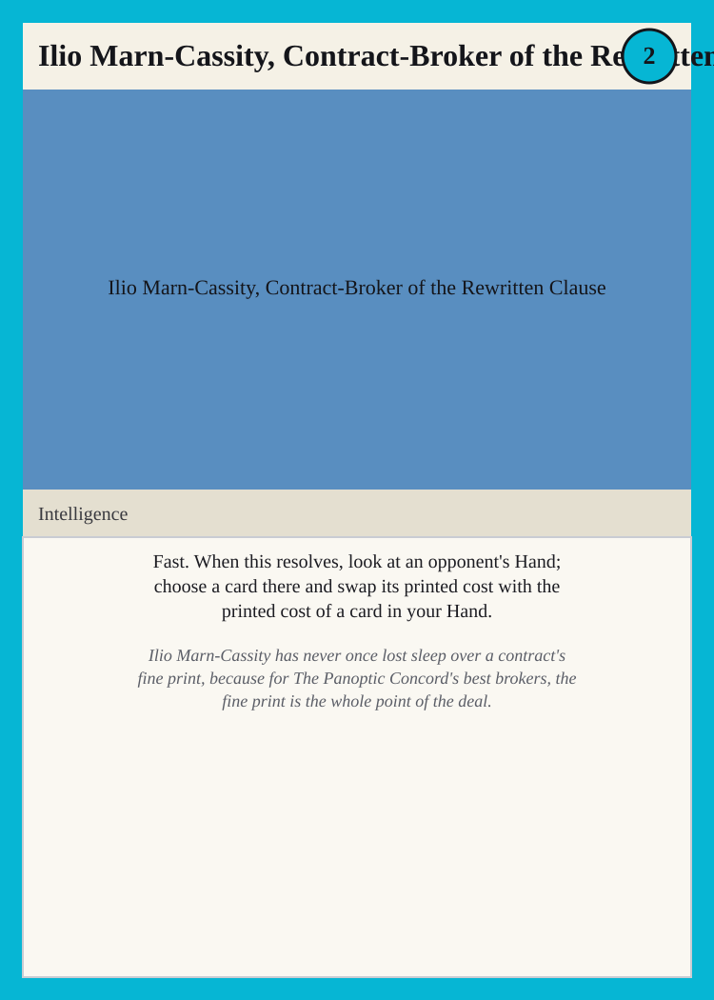
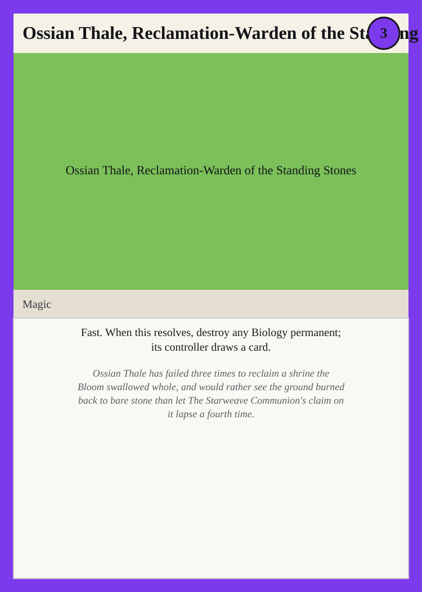
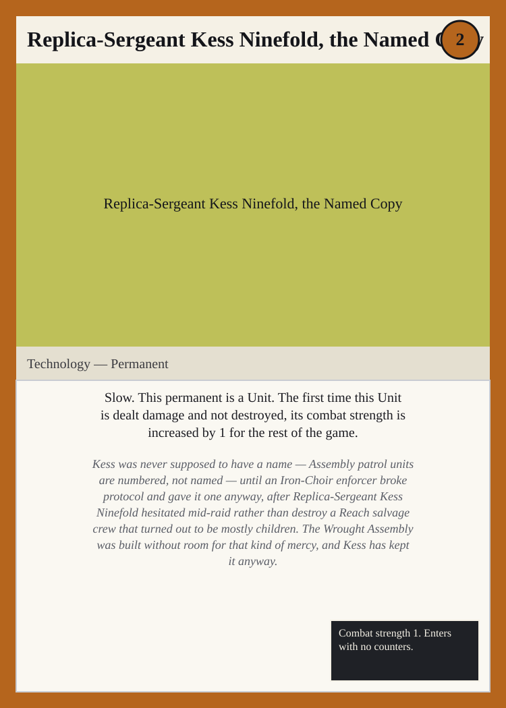

Character Signatures, Wave 3 — A Third Named Card per Race
Summary
This file adds a third named card per race under design/races/, each built from one specific named character already described in that race's own file under design/characters/, distinct from the two characters design/cards/character-signatures.md and design/cards/character-signatures-wave-2.md already signed for that race. Every card follows the same canonical template from design/rules.md Section 9.1 (Name, Cost line, Type line, Rules text, and, for Permanents, an optional Stats/counters line, always in that order), and every card's Rules text and flavor text together name both the race the card belongs to and the character it's based on, so the cross-reference is checkable by name. Each card's Cost line draws from that race's own primary Fount, and its Type line matches that race's own domain, per design/races/*.md. With this third wave, every race now has three named signature cards playable in Wreck Tangle.
The Cindral Reach — Materials
Bren Hollowmelt, the Cindergrown

Cost line: 3 Mass Type line: Materials — Permanent Rules text: Slow. This permanent is a Unit. The first time each turn this Unit would be destroyed by damage, instead remove all damage marked against it; it remains on the Field. Stats/counters line: Combat strength 2. Enters with no counters.
Bren Hollowmelt should have died over a Bloom-claimed debris field. Something grew into the wound before he could, and The Cindral Reach still hasn't decided which parts of him are still its own.
The Mireth Bloom — Biology
Vesk-Aduun, the Graft-Wearer

Cost line: 3 Bloom Type line: Biology — Permanent Rules text: Slow. This permanent is a Unit. Whenever this Unit deals damage to a Unit that is destroyed as a result, place a Growth counter on this Unit. Stats/counters line: Combat strength 2. Enters with no counters.
Vesk-Aduun carries a fragment of design-memory that was never meant to leave Assembly hands, fused now into flesh that keeps trying to think in straight lines. The Mireth Bloom doesn't mind what Vesk-Aduun steals from whatever it kills — only that it keeps growing stranger for it.
The Panoptic Concord — Intelligence
Ilio Marn-Cassity, Contract-Broker of the Rewritten Clause

Cost line: 2 Signal Type line: Intelligence Rules text: Fast. When this resolves, look at an opponent's Hand; choose a card there and swap its printed cost with the printed cost of a card in your Hand.
Ilio Marn-Cassity has never once lost sleep over a contract's fine print, because for The Panoptic Concord's best brokers, the fine print is the whole point of the deal.
The Starweave Communion — Magic
Ossian Thale, Reclamation-Warden of the Standing Stones

Cost line: 3 Tangle Type line: Magic Rules text: Fast. When this resolves, destroy any Biology permanent; its controller draws a card.
Ossian Thale has failed three times to reclaim a shrine the Bloom swallowed whole, and would rather see the ground burned back to bare stone than let The Starweave Communion's claim on it lapse a fourth time.
The Wrought Assembly — Technology
Replica-Sergeant Kess Ninefold, the Named Copy

Cost line: 2 Circuit Type line: Technology — Permanent Rules text: Slow. This permanent is a Unit. The first time this Unit is dealt damage and not destroyed, its combat strength is increased by 1 for the rest of the game. Stats/counters line: Combat strength 1. Enters with no counters.
Kess was never supposed to have a name — Assembly patrol units are numbered, not named — until an Iron-Choir enforcer broke protocol and gave it one anyway, after Replica-Sergeant Kess Ninefold hesitated mid-raid rather than destroy a Reach salvage crew that turned out to be mostly children. The Wrought Assembly was built without room for that kind of mercy, and Kess has kept it anyway.